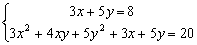
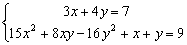

聯立二元一為一次及一為二次方程(II)
程式編寫日期: 2010年7月17日
這兩個程式可解聯立二元一為一次與一為二次方程，亦可以解聯立二元一次方程。另外若果輸入係數為整數/分數及最後答案為有理數時，答案會以分數形式表示，建議將計數機預先設定為假分數形式表示(按 SHIFT SETUP → → 2 )。 這個版本程式沒有第(I)版程式的輸入限制(亦即是輸入的第二個係數可以是0)。若果不需要記存聯立二元一次方程的答案，程式中綠色部份可以不輸入。
注意:若果你不用計複數根，為被免混淆及使用方便，建議輸入程式時選用COMP 模式。若要計複數根， 輸入程式時請選用複數模式(選擇新程式位置後按 2 選用CMPLX模式)，當執行程式時，程式會自動進入複數模式。
程式 (219 / 205 bytes)
?→D: ?→Y: ?→C: ?→M: ?→B:?→A: ?→X:
If Y: Then D┘Y→D: C┘Y→C: AD2 - DBM+: ?→Y:
YD - CB + 2CDA - X→B: ?→X: AC2 + YC - X→A:
2M => (√(B2 - 4MA) + B)┘Ans→X◢
M=0 => A┘B→X◢ C-DX→Y◢ B┘M - X→A◢ C-DAns→B:
Else C┘D→D: ?→Y: ?→C: D2M+XD-C→M: - Y-DB→B: D→X◢
A=0 => M┘B→Y◢ 2A => (√(B2 - 4MA) + B)┘Ans→Y◢
B┘A - Ans→B: D→A◢ B
例題1: 解聯立方程:

按 Prog 1 再按 3 EXE 5 EXE 8 EXE 3 EXE 4 EXE 5 EXE 3 EXE 5 EXE 20
EXE (顯示1) EXE (顯示1，即第一組的解答為 x=1, y=1)
EXE (顯示1/3) EXE (顯示7/5，即第一組的解答為 x=1/3, y=7/5)
若果程式包含綠色程式碼，執行完成後，按 RCL X 及 RCL Y分別顯示第一組解答案的x及y的值，按 RCL A 及 RCL B分別顯示第二組解答案的x及y的值。
例題2: 解以下聯立二元一次方程

按 Prog 1 再按 1 EXE 1 EXE 7 EXE 0 EXE 0 EXE 0 EXE
1 EXE -1 EXE 1 EXE (顯示4) EXE (顯示3)
因此解答為 x = 4 及 y = 3.
若果程式包含綠色程式碼，執行完成後，按 RCL X 及 RCL Y分別顯示解答案的x及y的值。
例題3: 試求直線 x - 2 = 0與圓形x2 + y2 + 3x + 7y + 2 = 0的交點。
先將兩個方程整理為 x = 2 及 x2 + y2 + 3x + 7y = - 2
按 Prog 1 再按 1 EXE 0 EXE 2 EXE 1 EXE 0 EXE 1 EXE 3 EXE 7 EXE - 2
EXE (顯示2) EXE (顯示 - 3，即第一組的解答為 x=2, y= - 3)
EXE (顯示2) EXE (顯示 - 4，即第一組的解答為 x=2, y= - 4)
所以兩個交點分別為(2, - 3)及(2, - 4)
若果程式包含綠色程式碼，執行完成後，按 RCLX 及 RCL Y分別顯示第一組解答案的x及y的值，按 RCL A 及 RCL B分別顯示第二組解答案的x及y的值。
註1: 舊版程式(版本 I )第二個輸入係數不可以是0，否則會出現Math ERROR，新版兩個程式(版本II)沒有這方面的限制(例題3)。
註2: 若果兩組的解相同，表示曲線與直線相切。
註3: 若果只計算出一組解答時(非兩組相同的情況)，答案只記存在X及Y的記憶。
註4: 若顯示顯示第一組解後，在顯示第二組解時出現Math ERROR。表示方程組只有一組解答，而且曲線與直線不是相切的關係。
註4: 現時不少同類程式，會無法計算下列方程的情況(出現 Math error)，這個程式沒有這方面的問題，其實這類程式必定可以同時計算聯立二元一次方程的問題，若果那個程式不能同時計算聯立二元一次方程，那麼很可能是設計欠嚴謹的程式，會能得出錯答的答案(誤以為無解)。

按 Prog 1 再按 3 EXE 4 EXE 7 EXE 15 EXE 8 EXE - 16 EXE
1 EXE 1 EXE 9 EXE (顯示1) EXE (顯示1)
因此解答為 x = 1 及 y = 1.
返回 CASIO fx-50FH、fx-3650P II、fx-50FH II及fx-50F PLUS 程式集